| Course Title: | Amazon Web Services |
| Course Code: | CSE2025 |
| Slot: | A1 + TA1 |
| Faculty Guide: | Prof. Thota Ramathulasi |
| Submitted By: | Harshraj Santosh Nago |
| Registration No: | 24BCA7664 |
| Academic Year: | 2026 – 2027 |
In modern higher education institutions, undergraduate students manage coursework across multiple subjects simultaneously, often leading to scattered submission schedules, missed deadlines, and unorganized academic workloads. The Student Task & Assignment Manager is an end-to-end cloud-native web application designed to centralize academic deadlines, track submission velocity, and provide priority-driven schedules.
To comply with industry-standard cloud engineering practices, the application is engineered following the AWS 3-Tier Decoupled Architecture:
systemd daemon.db.t4g.micro), isolated via AWS Security Groups for secure relational persistence.
The complete project is publicly deployed, active 24/7 in the ap-south-1 (Mumbai) region, and operates entirely within the AWS Free Tier threshold ($0.00 operational cost).
Students in engineering disciplines routinely handle 5 to 7 courses per semester, each with separate deadlines, lab rubrics, and submission channels. Without a unified system, students face:
The system employs a 3-tier decoupled cloud topology. Static presentation delivery is separated from business logic processing and database persistence, preventing cascading failures and optimizing cloud resources:
[ User Web Browser ]
│
│ HTTP GET / Static Asset Delivery
▼
┌────────────────────────────────────────────────────────┐
│ TIER 1: PRESENTATION LAYER (Amazon S3) │
│ Bucket: student-task-manager-harshraj (ap-south-1) │
│ Static Website Hosting Enabled │
│ Compiled React 18 + Vite SPA Assets │
└────────────────────────┬───────────────────────────────┘
│
│ RESTful API Calls (JSON / Port 8080)
▼
┌────────────────────────────────────────────────────────┐
│ TIER 2: APPLICATION LAYER (Amazon EC2) │
│ Instance: studen-manager-backend (t3.micro, Ubuntu) │
│ Public IP: 65.0.6.148 | Spring Boot 3 REST API │
│ Auto-restart Daemon: systemd (student-manager.service)│
└────────────────────────┬───────────────────────────────┘
│
│ JDBC Connection (Port 5432)
▼
┌────────────────────────────────────────────────────────┐
│ TIER 3: DATABASE LAYER (Amazon RDS) │
│ Instance: student-manager-db (db.t4g.micro) │
│ Engine: PostgreSQL 16/18 | Database: student_manager │
│ Storage: 20 GiB gp2 SSD | AWS VPC Security Groups │
└────────────────────────────────────────────────────────┘
The presentation layer is hosted on Amazon Simple Storage Service (S3) in the ap-south-1 (Mumbai) region. S3 serves pre-compiled production HTML, JavaScript, and CSS bundles directly to client browsers without utilizing EC2 processing cycles.
The bucket student-task-manager-harshraj holds the distribution output from npm run build, including index.html and the compiled assets/ directory.
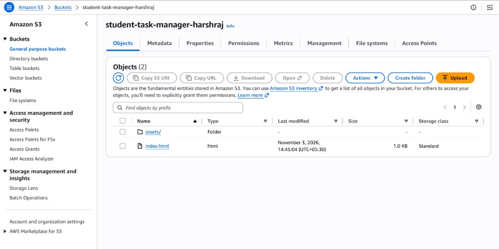
Static website hosting was enabled on the bucket, routing both the index and error documents to index.html to facilitate client-side React routing.
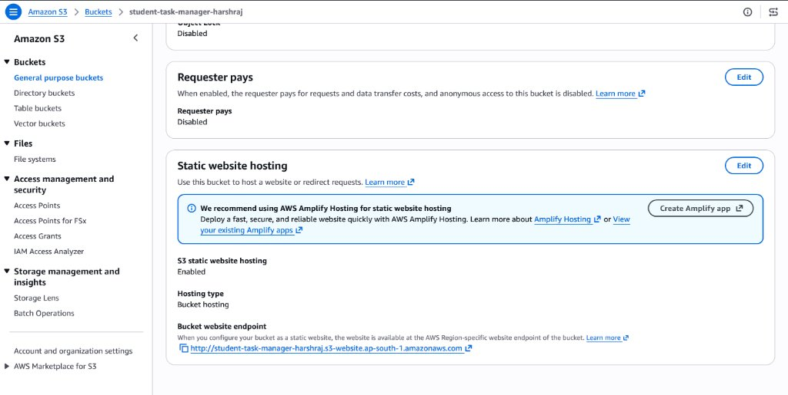
A public read policy was applied to grant read permissions (s3:GetObject) to anonymous web traffic while protecting write and bucket management actions:
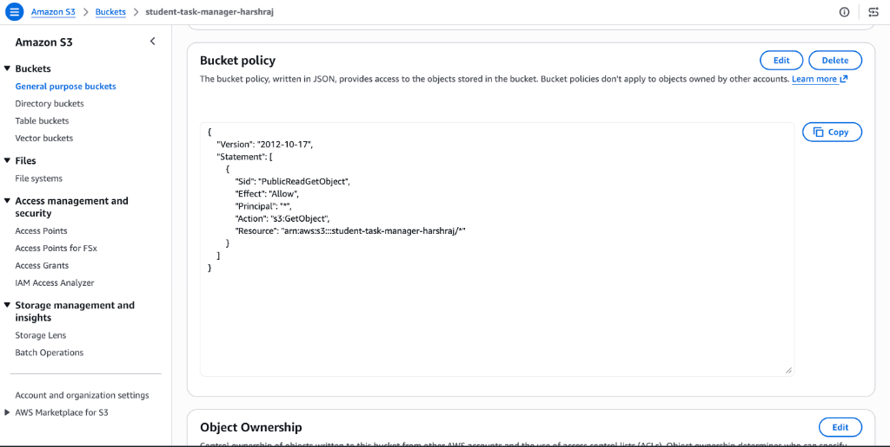
The middle tier is responsible for handling REST API requests, data validation, business logic, and database transactions via Java 17 and Spring Boot 3.
An Amazon EC2 instance was launched with Ubuntu 24.04 LTS to serve as the application host:
studen-manager-backendi-013eca07c52b74cc1t3.micro (2 vCPUs, 1.0 GiB RAM)65.0.6.148172.31.14.7ap-south-1b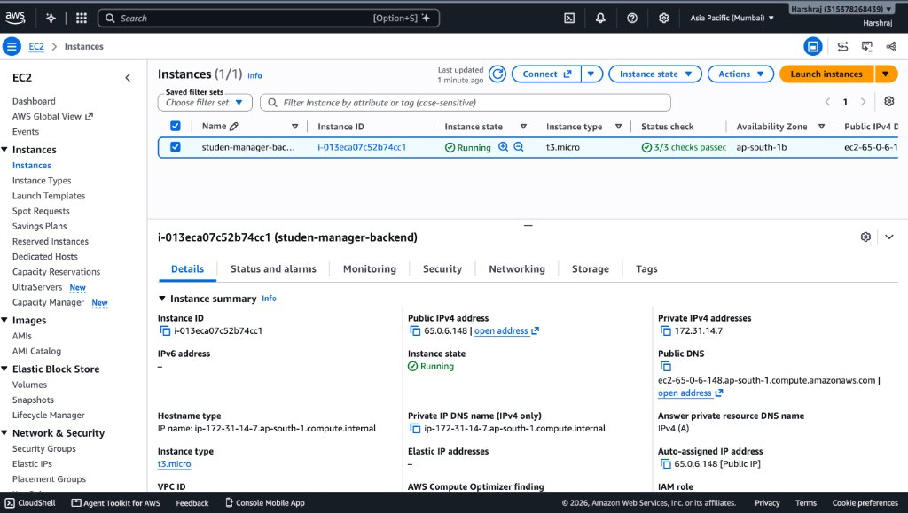
Inbound network traffic to the instance is governed by Security Group launch-wizard-1 (sg-050d7e75e205e642e), configured with strict port allowances:
| Port Range | Protocol | Source | Purpose |
|---|---|---|---|
| 22 | TCP | 0.0.0.0/0 | SSH Administration via key pair (student-key.pem) |
| 80 | TCP | 0.0.0.0/0 | HTTP Web Traffic |
| 8080 | TCP | 0.0.0.0/0 | Spring Boot REST API Service |
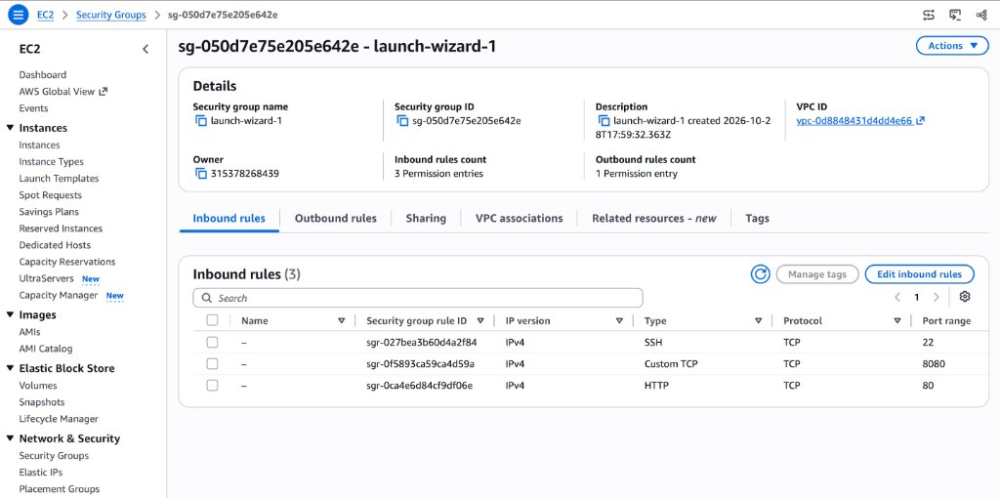
To ensure the application remains permanently active and automatically reboots if the virtual server restarts, the backend is managed by systemd at /etc/systemd/system/student-manager.service:
[Unit]
Description=Student Task & Assignment Manager Backend
After=network.target
[Service]
User=ubuntu
WorkingDirectory=/home/ubuntu
ExecStart=/usr/bin/java -jar /home/ubuntu/app.jar --spring.profiles.active=prod
Restart=always
RestartSec=10
[Install]
WantedBy=multi-user.target
The persistence tier utilizes Amazon Relational Database Service (RDS) for PostgreSQL. Decoupling storage from EC2 prevents data loss during instance termination and provides managed snapshot capabilities.
student-manager-dbdb.t4g.micro (AWS Graviton2 Processor)Availableap-south-1cstudent-manager-db.ct8my864ardl.ap-south-1.rds.amazonaws.com5432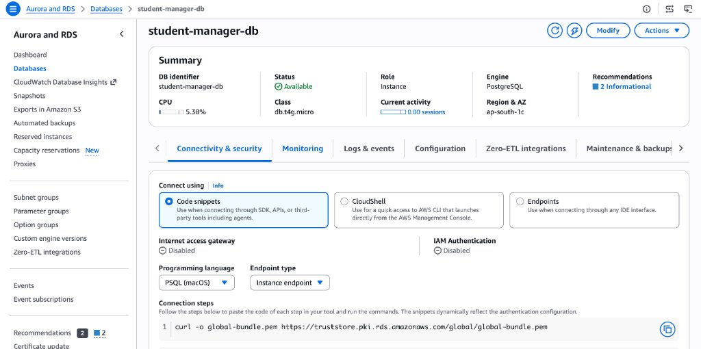
The database instance is provisioned with 20 GiB of General Purpose SSD (gp2) storage with AWS KMS encryption enabled:
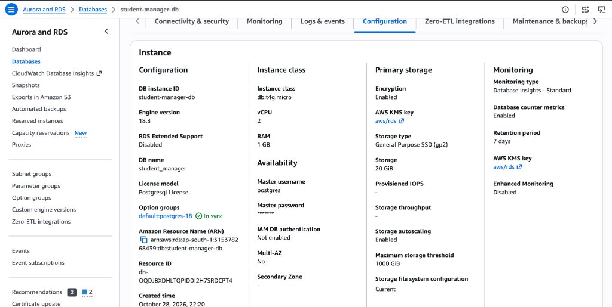
The core relational entity is defined in PostgreSQL under the assignments table:
| Column | Type | Constraints | Description |
|---|---|---|---|
id |
BIGINT | PRIMARY KEY, AUTO_INCREMENT | Unique record identifier |
title |
VARCHAR(255) | NOT NULL | Assignment title |
subject |
VARCHAR(100) | NOT NULL | Course or subject name |
description |
TEXT | NULLABLE | Instructions, notes, and rubric details |
due_date |
DATE | NULLABLE | Target completion deadline |
priority |
VARCHAR(20) | NOT NULL, DEFAULT 'MEDIUM' | LOW, MEDIUM, HIGH |
status |
VARCHAR(20) | NOT NULL, DEFAULT 'PENDING' | PENDING, IN_PROGRESS, COMPLETED |
created_at |
TIMESTAMP | NOT NULL | System creation timestamp |
The user interface provides real-time academic workload metrics and an interactive Kanban board:
Start ➔, Done ✓, Reopen ⮌) update PostgreSQL in real-time.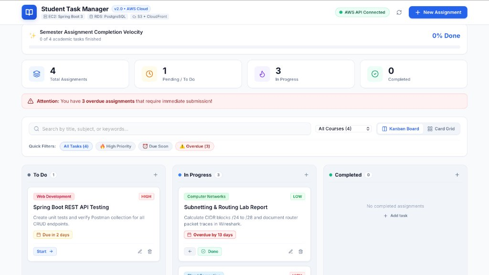
The creation modal includes course quick-select pills and preset due-date calculators that synchronize with Amazon RDS via HTTP POST requests:
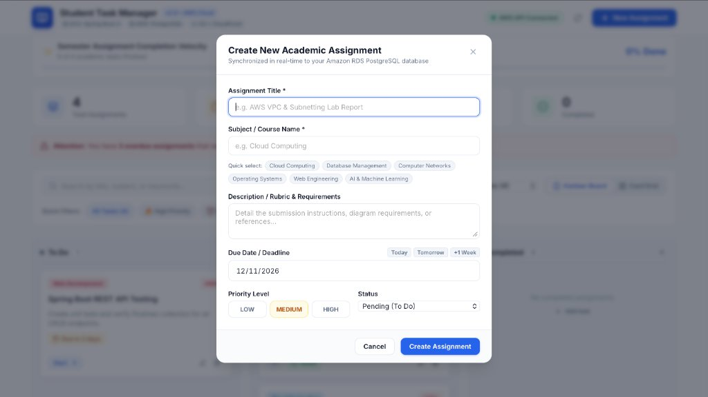
Independent verification of the application tier was conducted via HTTP GET requests to /api/health on the EC2 host:
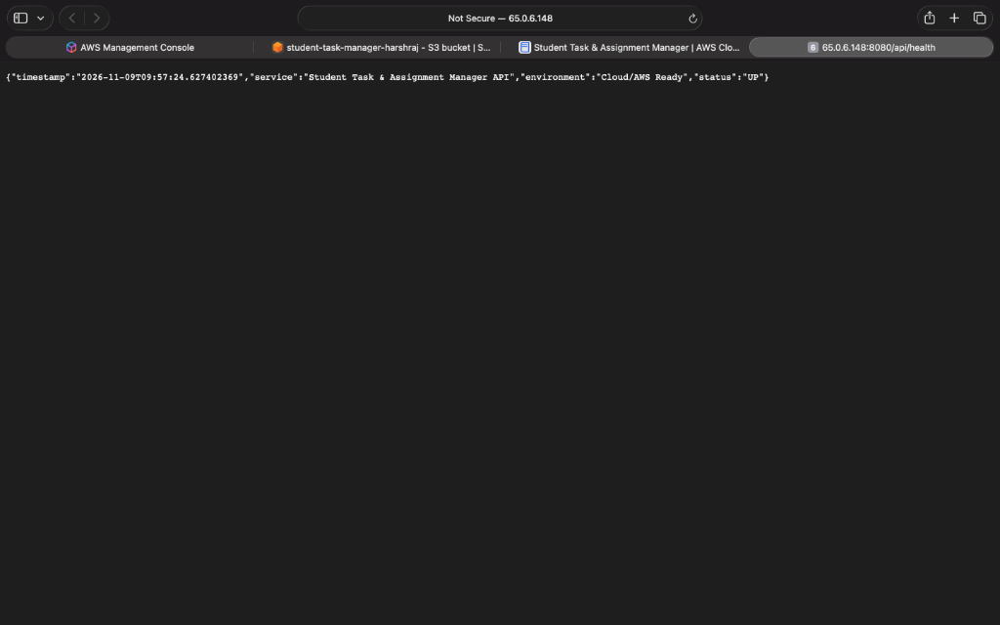
{
"timestamp": "2026-11-09T09:57:24.627402369",
"service": "Student Task & Assignment Manager API",
"environment": "Cloud/AWS Ready",
"status": "UP"
}
All source code, configuration files, and build scripts are version-controlled and hosted on GitHub:
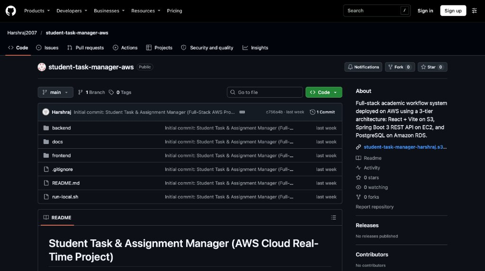
To ensure financial sustainability, all provisioned resources strictly adhere to the AWS 12-Month Free Tier guidelines:
| AWS Service | Allocated Resource | Monthly Free Tier Allowance | Actual Cost |
|---|---|---|---|
| Amazon EC2 | 1 × t3.micro Instance (Ubuntu 24.04) |
750 Hours / Month | $0.00 |
| Amazon RDS | 1 × db.t4g.micro PostgreSQL Instance |
750 Hours / Month | $0.00 |
| RDS Storage | 20 GiB General Purpose SSD (gp2) | 20 GiB / Month | $0.00 |
| Amazon S3 | Static Assets (~1.2 MB) | 5.0 GB Standard Storage | $0.00 |
| Data Transfer | Outbound REST API & Web Responses | 15 GB Outbound / Month | $0.00 |
| TOTAL MONTHLY EXPENDITURE: | $0.00 (₹0.00) | ||
The Student Task & Assignment Manager project successfully implements a modern full-stack web application hosted on an enterprise 3-tier AWS architecture for CSE2025: Amazon Web Services:
systemd service auto-restart daemons.| Project Deliverable | Access Link / Location |
|---|---|
| Live Web Application | http://student-task-manager-harshraj.s3-website.ap-south-1.amazonaws.com/ |
| Backend API Health Check | http://65.0.6.148:8080/api/health |
| Source Code (GitHub) | https://github.com/Harshraj2007/student-task-manager-aws |